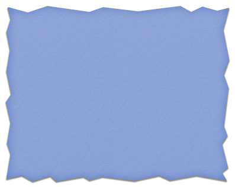

Armadillos
Back Yard Craziness
We have been having some issues with holes being dug in the back yard over the past few years. Well, we had our theories about gophers, huge moles and possums. Here is the proof we have been looking for.
